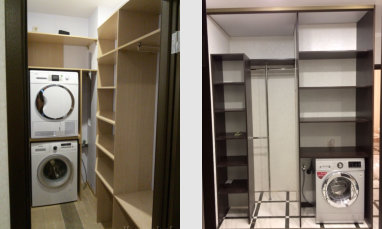

/ исходная страница 0080
Для шкафов и перегородок
Профили и раздвижные системы для шкафов-купе и перегородок. ЛДСП, МДФ, Шпон, стекла, зеркала, пескоструйка, фотопечать, витражи. Каталог с фото - выбирайте на сайте.
Открыть оригинал ↗
/ содержание
В этом разделе сайта представлены материалы, которые мы используем при изготовлении мебели. Здесь представлен не исчерпывающий каталог, а лишь образцы наиболее популярных, из применяемых нами материалов. Чтобы узнать более подробную информацию, позвоните по телефону +7 (918) 510-69-99или вызовите замерщика с актуальными каталогами и образцами.
Чтобы воплотить в жизнь классические и оригинальные пожелания наших заказчиков и гарантировать безупречную эксплуатацию изготавливаемых шкафов-купе мы используем добротные материалы и фурнитуру и предлагаем беспрецедентное количество их номенклатурных позиций.
Для создания корпусной конструкции специалисты Малко Мебель используют древесно-стружечные плиты с высококачественным ламинирующим покрытием и кромочные материалы производства компаний Egger, Kronospan и РУССКИЙ ЛАМИНАТ.
ЛДСП и МДФ плиты данных брендов имеет красивую фактуру и высокую плотность структуры, характеризуется стойкостью ламинирующего покрытия к стиранию, механическим повреждениям, тепловому и солнечному излучению. В зависимости от проектных особенностей мы можем предложить ЛДСП и его кромкование в различной толщине.
Использование алюминиевых профилей торговых марок Aristo, Raumplus и Модус обуславливает жесткость фасадов и легкое перемещение дверей. В нашем ассортименте эти профили представлены в:
Мы можем также предложить разноплановое исполнение ручек и установку безшумных роликовых систем с доводчиками и без.
Разделы страницы
- Материалы, фурнитура и декор для шкафов
- Шкаф начинается с ДСП
- Профили и роликовые механизмы – прочность на века
- Фасады дверей – эпатажность, классика и креатив
- Он-лайн конструктор
Навигация и пункты
- WhatsApp Max +7 (918) 510-69-99 +7 (863) 279-39-80 с 8:00 до 20:00 без выходных
- zakaz@malkomebel.ru
- Все кухни на заказ
- Кухни из массива дерева
- Кухни из шпона
- Кухни "Италия"
- Кухни МДФ c наборным фасадом (под дерево)
- Кухни "под потолок"
- Кухни из МДФ крашеного
- Кухни из МДФ пленочного
- Кухни МДФ-пластик
- Кухни - МДФ рамочный